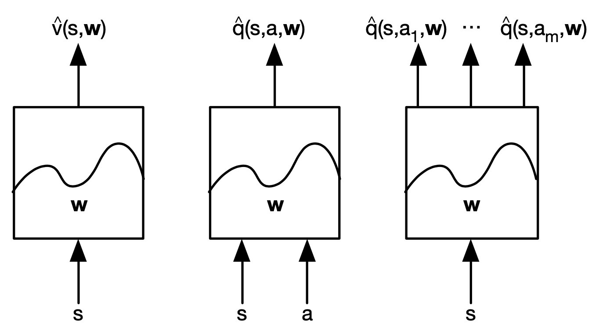
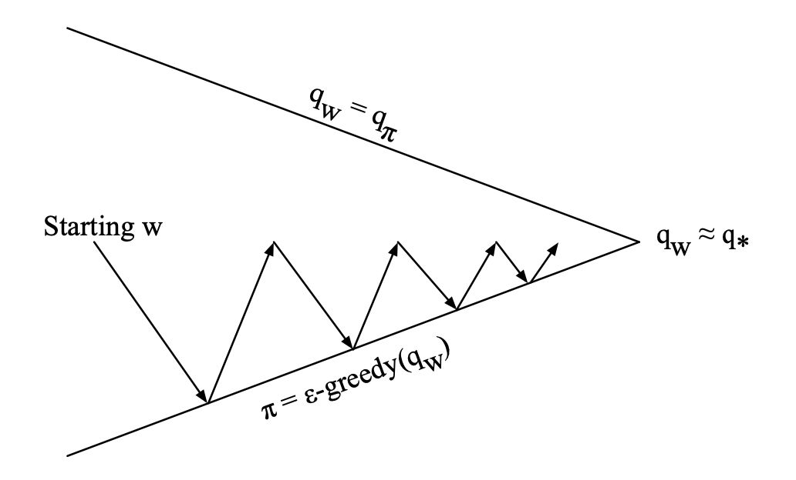
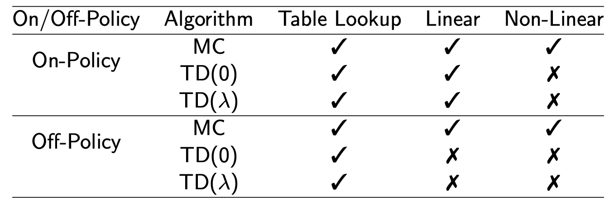
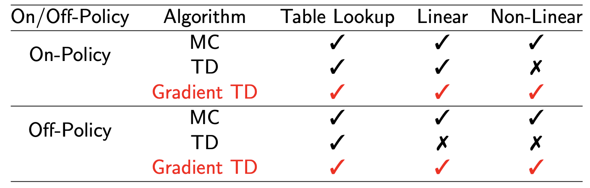
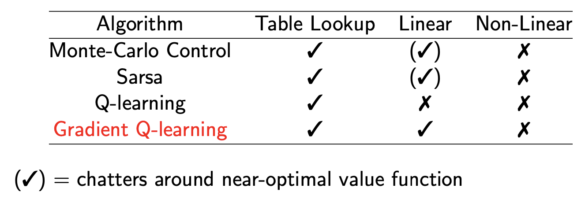
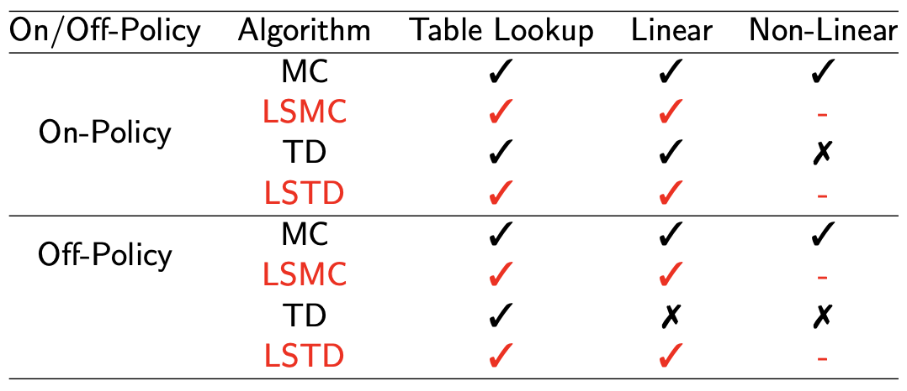
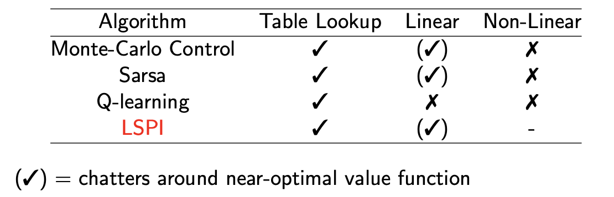

[David Silver强化学习]6·Value Function Approximation
\[ \newcommand{\calA}{\mathcal A} \newcommand{\calP}{\mathcal P} \newcommand{\calR}{\mathcal R} \newcommand{\calS}{\mathcal S} \newcommand{\E}{\mathbb E} \newcommand{\bfw}{\mathbf w} \newcommand{\bfx}{\mathbf x} \]
1 Introduction
之前我们学习的所有算法都要求存储下 \(V(s)\) 或者 \(Q(s,a)\)，称之为 Table Lookup 的方法。但是实际问题的状态和动作数量可能非常多，甚至于是连续的而非离散的，表格就无法存储并处理。此时，我们可以用一个模型（函数）去近似 value function，即： \[ \hat v(s,\bfw)\approx v_\pi(s)\quad \hat q(s,a,\bfw)\approx q_\pi(s,a) \] 其中 \(\bfw\) 是模型的参数，譬如神经网络的参数。这样做还有一个好处，假若模型具有良好的泛化性，即能从见过的状态泛化到没有见过的状态，那么我们还可以得知没见过的状态的 value function.

用来近似的模型（函数）有许多选择：
- 线性模型（特征的线性组合）
- 神经网络
- 决策树
- 最近邻
- 傅立叶/小波基
- ……
本课程关注可微分的模型，即线性模型和神经网络。
2 Incremental Methods
2.1 Gradient Descent
因为我们只考虑可微分的模型，所以优化模型的方法可以用梯度下降。更具体地说，我们使用 MSE (Mean-Squared Error) 作为估计值与真实值的损失函数： \[ J(\bfw)=\frac{1}{2}\E_\pi\left[(v_\pi(S)-\hat v(S, \bfw))^2\right] \] 则更新的每一步为： \[ \Delta \bfw=-\alpha\nabla_\bfw J(\bfw)=\alpha\E_\pi[(v_\pi(S)-\hat v(S,\bfw))\nabla_\bfw \hat v(S,\bfw)] \] 由于本节我们考虑 incremental methods，即每走一步就更新，所以： \[ \Delta \bfw =\alpha(v_\pi(S)-\hat v(S,\bfw))\nabla_\bfw \hat v(S,\bfw) \]
2.2 Linear Function Approximation
最简单的模型即线性模型，我们使用特征向量来表示一个状态： \[ \bfx(S)=\begin{bmatrix}\bfx_1(S)\\\vdots\\\bfx_n(S)\end{bmatrix} \] 则模型为特征向量的线性组合： \[ \hat v(S,\bfw)=\bfx(S)^T\bfw=\sum_{j=1}^n\bfx_j(S)\bfw_j \] 使用 MSE 损失函数和梯度下降优化方法： \[ \begin{align} &\nabla_\bfw \hat v(S,\bfw)=\bfx(S)\\ &\Delta\bfw=\alpha(v_\pi(S)-\hat v(S,\bfw))\bfx(S) \end{align} \]
\(\text{更新量}=\text{步长（学习率）}\times\text{预测误差}\times\text{特征向量}\)
值得注意的是，Table Lookup 和线性模型近似并不是完全不同的两种方式，如果我们设置特征向量为： \[ \bfx(S)=\begin{bmatrix}\mathbf 1(S=s_1)\\\vdots\\\mathbf 1(S=s_n)\end{bmatrix} \] 则线性模型本质就是选取当前所在状态的对应权重，并使其逼近 \(v_\pi(S)\)，因此权重 \(\bfw\) 正是我们存储的表格 \(V(S)\).
2.3 Incremental Prediction Algorithms
上文依赖于真实的 value function \(v_\pi(S)\) 作为监督信号，但是在 RL 中这显然不成立。因此在实践中，我们用 target 代替 \(v_\pi(s)\)：
MC \[ \Delta\bfw=\alpha({\color{purple}{G_t}}-\hat v(S_t,\bfw))\nabla_\bfw\hat v(S_t, \bfw) \]
TD(0) \[ \Delta\bfw=\alpha({\color{purple}{R_{t+1}+\gamma\hat v(S_{t+1},\bfw)}}-\hat v(S_t,\bfw))\nabla_\bfw\hat v(S_t, \bfw) \]
\(\text{TD}(\lambda)\) \[ \Delta\bfw=\alpha({\color{purple}{G_t^\lambda}}-\hat v(S_t,\bfw))\nabla_\bfw\hat v(S_t, \bfw) \] Backward view： \[ \begin{align} &\delta_t=R_{t+1}+\gamma\hat v(S_{t+1},\bfw)-\hat v(S_t,\bfw)\\ &E_t=\gamma\lambda E_{t-1}+\bfx(S_{t})\\ &\Delta\bfw=\alpha\delta_tE_t \end{align} \]
2.4 Incremental Control Algorithms
做 control 的基本思路不变，即在评价策略和更新策略之间反复迭代。同样的，我们需要将 \(V\) 替换为 \(Q\).

在 MSE 损失函数下，每一步的更新为： \[ \Delta \bfw=\alpha(q_\pi(S,A)-\hat q(S,A,\bfw))\nabla_\bfw\hat q(S,A,\bfw) \] 若设特征向量： \[ \bfx(S,A)=\begin{bmatrix}\bfx_1(S,A)\\\vdots\\\bfx_n(S,A)\end{bmatrix} \] 并使用线性模型： \[ \hat q(S,A,\bfw)=\bfx(S,A)^T\bfw=\sum_{j=1}^n\bfx_j(S,A)\bfw_j \] 则更新为： \[ \Delta \bfw=\alpha(q_\pi(S,A)-\hat q(S,A,\bfw))\bfx(S,A) \] 类似 prediction，我们实操时用 target 代替 \(q_\pi(s,a)\)：
MC \[ \Delta\bfw=\alpha({\color{purple}{G_t}}-\hat q(S_t,A_t,\bfw))\nabla_\bfw\hat q(S_t,A_t,\bfw) \]
TD(0) \[ \Delta\bfw=\alpha({\color{purple}{R_{t+1}+\gamma\hat q(S_{t+1}, A_t)}}-\hat q(S_t,A_t,\bfw))\nabla_\bfw\hat q(S_t,A_t,\bfw) \]
\(\text{TD}(\lambda)\) \[ \Delta\bfw=\alpha({\color{purple}{q_t^\lambda}}-\hat q(S_t,A_t,\bfw))\nabla_\bfw\hat q(S_t,A_t,\bfw) \] Backward view： \[ \begin{align} &\delta_t=R_{t+1}+\gamma\hat q(S_{t+1},A_{t+1},\bfw)-\hat q(S_t,A_t,\bfw)\\ &E_t=\gamma\lambda E_{t-1}+\nabla_\bfw \hat q(S_t,A_t,\bfw)\\ &\Delta \bfw=\alpha\delta_tE_t \end{align} \]
2.5 Convergence

TD 在 off-policy 和 non-linear function approximation 时不收敛是因为它并没有沿着任何目标函数的梯度进行更新，有人提出了改进的 Gradient TD：


3 Batch Methods
3.1 Least Squares Prediction
虽然 gradient descent 很简单，但是它并不 sample efficient，因为我们浪费了许多过往的经验。不妨把这些过往的经验存下来，视为一个训练集，每次更新取出一个 batch，就像我们在监督学习里做的那样。
形式化地说，经验（experience）是一系列 \(\langle \text{state}, \text{value}\rangle\) pairs： \[ \mathcal D=\{\langle s_1, v_1^\pi\rangle,\ldots,\langle s_T, v_T^\pi\rangle\} \] 我们将优化目标设置为最小二乘（least squares）： \[ LS(\bfw)=\sum_{t=1}^T(v_t^\pi-\hat v(s_t,\bfw))^2=\E_\mathcal D[(v^\pi-\hat v(s,\bfw))^2] \]
SGD with Experience Replay
一般地，我们可以使用 SGD 迭代求解上述最小二乘问题，步骤如下：
从 experience 中采样 \[ \langle s,v^\pi\rangle\sim \mathcal D \]
使用梯度下降更新参数 \[ \Delta \bfw=\alpha(v^\pi-\hat v(s,\bfw))\nabla_\bfw \hat v(s,\bfw) \]
反复上述步骤，最终收敛到最小二乘的解： \[ \bfw^\pi=\arg\min_{\bfw}LS(\bfw) \]
Experience Replay in Deep Q-Networks (DQN)
特别地，我们考虑使用神经网络作为近似函数的情形。DQN 使用 experience replay 和 fixed Q-targets 这两个 trick 使得训练过程更加稳定，其步骤如下：
根据 \(\epsilon\text{-greedy}\) 策略采取行动 \(a_t\)
将转移 \((s_t,a_t,r_{t+1},s_{t+1})\) 存储在 replay memory \(\mathcal D\) 中
从 \(\mathcal D\) 中随机采样一个 mini-batch \((s,a,r,s')\)
用老的、固定的参数 \(\bfw^-\) 计算 Q-learning targets
使用 SGD 优化 MSE 损失函数： \[ \mathcal L_i(\bfw_i)=\E_{s,a,r,s'\sim\mathcal D_i}\left[\left(r+\gamma \max_{a'}Q(s',a';\bfw_i^-)-Q(s,a;\bfw_i)\right)^2\right] \]
Linear Least Squares Prediction
上面我们用数值解法（SGD）求解了最小二乘，但众所周知，最小二乘在线性模型下是可以直接写出解析解的。如果我们用线性模型去近似 \(q(s,a)\)，那么可以直接解出： \[ \bfw=\left(\sum_{t=1}^T\bfx(s_t)\bfx(s_t)^\top\right)^{-1}\sum_{t=1}^T\bfx(s_t)v_t^\pi \] 对于长度为 \(N\) 的特征向量，直接求解的复杂度是 \(O(N^3)\) 的，使用 Shermann-Morrison 算法是 \(O(N^2)\) 的。
Algorithms
上文内容只是方法论，实际中我们不知道 \(v_t^\pi\)，需要将 \(v_t^\pi\) 换做 MC target, TD target 或 \(\text{TD}(\lambda)\) target，得到具体的算法。
- LSMC：\(v_t^\pi\approx G_t\)
- LSTD：\(v_t^\pi\approx R_{t+1}+\gamma \hat v(S_{t+1},w)\)
- \(\text{LSTD}(\lambda)\)：\(v_t^\pi\approx G_t^\lambda\)

3.2 Least Squres Control
Control 只需将 \(v\) 替换为 \(q\)，然后遵循 policy iteration 的方式——使用最小二乘的方式进行策略评估，贪心地更新策略，如此迭代。
